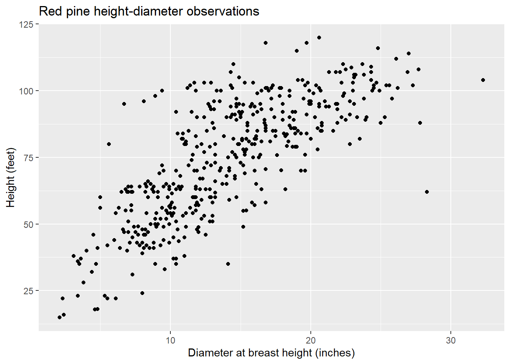
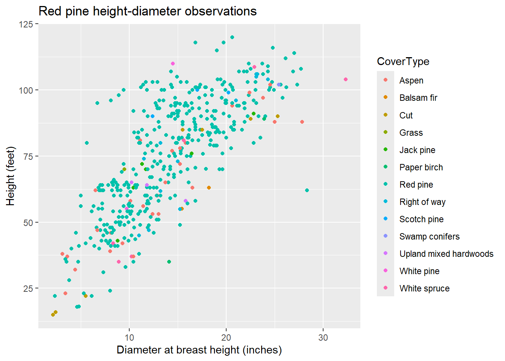
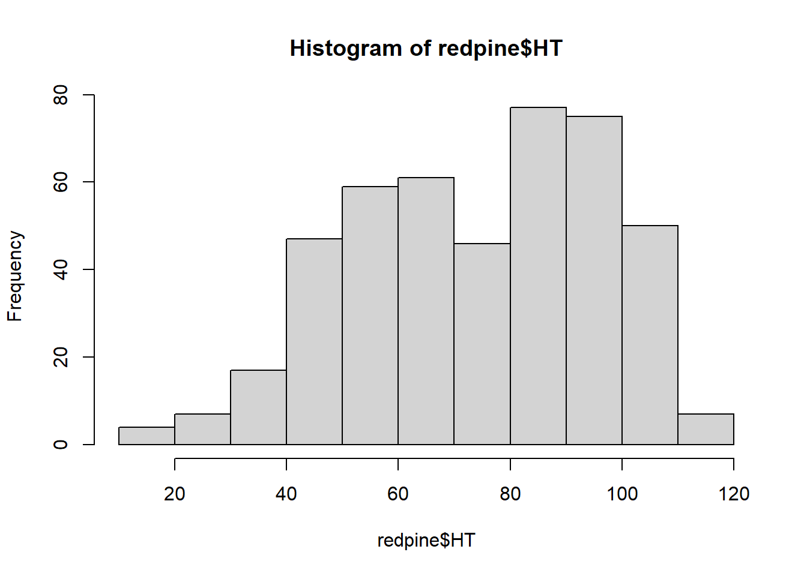

# install.packages("BrailleR")
library(BrailleR)
You might have seen these prompts while you’re uploading an image to social media or anywhere else on the internet: “Add alt text here.” Alt text describes what’s contained in an image or figure on a webpage. It’s useful because it can be used by screen readers for visually impaired people.
Adding alt text to graphics promotes accessibility and allows more readers to interpret your image or figure. Alt text will also appear on the screen if an image does not load properly on a webpage.
As it turns out, adding alt text to images also improves search engine optimization. So, dedicating time to writing alt text on images and figures can promote accessibility and also help to rank your webpages higher in internet searches.
I recently read an excellent interview in Significance magazine about the importance of using alt text for visually impaired learners. In it, they describe the R package BrailleR and how it can be used to generate text from figures made in R. This post describes a few example uses of the functions found within the package.
The BrailleR package
I’ve read online that R is a software program that is already friendly for the blind and visually impaired. The BrailleR package contains functions that do more to help blind and visually impaired people interpret graphs and figures produced in R.
You can install the R package and load it in your workspace:
As an example, I’ll show a series of graphs using the redpine data set available in the stats4nr package. Data contain information collected from 450 red pine trees in Minnesota, including their diameter at breast height (DBH) and total height (HT). Data were collected from various forest cover types (CoverType*) and forest inventory plots (PlotNum) across the forest:
# install.packages("devtools")
# devtools::install_github("mbrussell/stats4nr")
library(stats4nr)
data(redpine)
redpine# A tibble: 450 × 5
PlotNum CoverType TreeNum DBH HT
<dbl> <chr> <dbl> <dbl> <dbl>
1 5 Red pine 46 13 51
2 5 Red pine 50 8.3 54
3 5 Red pine 54 8.2 48
4 5 Red pine 56 11.8 55
5 5 Red pine 63 9 54
6 5 Red pine 71 12.5 46
7 11 Cut 47 25.3 90
8 13 Red pine 1 16.2 85
9 13 Red pine 2 18.8 86
10 13 Red pine 7 22.2 90
# ℹ 440 more rowsWe can make a plot of tree height and diameter using the following code from ggplot:
library(tidyverse)
p_HT <- ggplot(redpine, aes(DBH, HT)) +
geom_point() +
labs(x = "Diameter at breast height (inches)",
y = "Height (feet)",
title = "Red pine height-diameter observations")When we call the p_HT object, the BrailleR package provides the graph in addition to four lines of text describing what’s contained in the plot:
p_HT
This chart has title 'Red pine height-diameter observations'.
It has x-axis 'Diameter at breast height (inches)' with labels 10, 20 and 30.
It has y-axis 'Height (feet)' with labels 25, 50, 75, 100 and 125.
The chart is a set of 450 big solid circle points of which about 91% can be seen.The output reads us the title of the plot, the axis labels and axis titles, and the number of data points. This is all very helpful attributes for interpreting the plot and can be read on the screen.
The data are collected from different cover types, so we can add a different color for each tree using col = CoverType and produce the results:
p_HT2 <- ggplot(redpine, aes(DBH, HT, col = CoverType)) +
geom_point() +
labs(x = "Diameter at breast height (inches)",
y = "Height (feet)",
title = "Red pine height-diameter observations")
p_HT2
This chart has title 'Red pine height-diameter observations'.
It has x-axis 'Diameter at breast height (inches)' with labels 10, 20 and 30.
It has y-axis 'Height (feet)' with labels 25, 50, 75, 100 and 125.
There is a legend indicating colour is used to show CoverType, with 13 levels:
Aspen shown as strong reddish orange colour,
Balsam fir shown as strong orange colour,
Cut shown as strong yellow colour,
Grass shown as vivid yellow green colour,
Jack pine shown as vivid yellowish green colour,
Paper birch shown as vivid yellowish green colour,
Red pine shown as brilliant bluish green colour,
Right of way shown as vivid blue colour,
Scotch pine shown as brilliant blue colour,
Swamp conifers shown as vivid violet colour,
Upland mixed hardwoods shown as vivid violet colour,
White pine shown as deep purplish pink colour and
White spruce shown as vivid purplish red colour.
The chart is a set of 450 big solid circle points of which about 91% can be seen.Now, you can see the additional detail of the number of levels in each cover type and their colors.
The **BrailleR package also works for graphics developed in base R, which can be specified with the VI() function. Here’s a histogram of the height of red pines.
VI(hist(redpine$HT))
This is a histogram, with the title: with the title: Histogram of redpine$HT
"redpine$HT" is marked on the x-axis.
Tick marks for the x-axis are at: 20, 40, 60, 80, 100, and 120
There are a total of 450 elements for this variable.
Tick marks for the y-axis are at: 0, 20, 40, 60, and 80
It has 11 bins with equal widths, starting at 10 and ending at 120 .
The mids and counts for the bins are:
mid = 15 count = 4
mid = 25 count = 7
mid = 35 count = 17
mid = 45 count = 47
mid = 55 count = 59
mid = 65 count = 61
mid = 75 count = 46
mid = 85 count = 77
mid = 95 count = 75
mid = 105 count = 50
mid = 115 count = 7The functions available in BrailleR are a great start for generating alt text copy that can be used on a figure or image. But they won’t tell you the trends in the data or the “big message” that you want to leave your reader with. This is essential to have an effective graphic.
For this, Amy Cesal has any excellent post on writing alt-text images. Her template is to use:
“CHART TYPE of TYPE OF DATA where REASON FOR INCUDING CHART.”
For example, for the first figure plotting tree diameter and height, one could provide the following for the alt text description:
“Scatter plot of red pine tree diameters and heights where larger diameter trees are taller than shorter ones.”
In combination with the text provided by BrailleR, these steps can help improve the accessibility of your graphs and figures made in R. For more, a great resource I found for learning more about the BrailleR package is the book BrailleR In Action by A. Jonathan R. Godfrey.
–
By Matt Russell. Email Matt with any questions or comments.